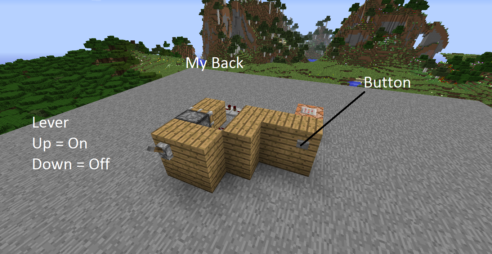

Redstone Contraptions in Minecraft
By: Aaliyah
What is Redstone?
Redstone is the key component of Minecraft that has the ability to create complex and mesmerizing contraptions in the game world. If you are new to Minecraft or just starting to explore the concept of Redstone, you might be wondering what this magical material is and why it's so important. In this article, we'll take a closer look at Redstone and explain what it is, how it works, and why it's the cornerstone of Minecraft's most impressive constructions.
At its core, Redstone is a mineral that can be found deep within the cavernous world of Minecraft. It's a bit like electricity and can be used to power various devices and machines in the game. Redstone has the ability to transmit power over long distances, making it an ideal material for creating intricate contraptions, automatic farms, and even entire rollercoaster rides.
Redstone can be mined using an iron pickaxe or better, and can be crafted into a variety of different items, including Redstone torches, repeaters, and comparators. These items allow you to control the flow of Redstone power and create more complex circuits and contraptions.
One of the most interesting aspects of Redstone is that it can be combined with other materials to create truly breathtaking creations. From automated sorting systems and hidden doors, to impressive rollercoaster rides and even a playable game of Tetris, the possibilities with Redstone are truly endless.
In conclusion, Redstone is a fascinating component of Minecraft that opens up a world of creative possibilities. Whether you're a seasoned Minecraft pro or new to the game, learning how to use Redstone can take your gameplay to the next level and lead you to create truly awe-inspiring contraptions.
ad space
How to Get Redstone
Redstone is a crucial ingredient in Minecraft for players who want to craft complex machines, traps or even play automated music on their server. If you're new to the game, the concept of Redstone may be a bit overwhelming. However, understanding the basics can eventually help you master the game and build complex mechanisms.
Redstone is a mineral that can be found in the bottom sixteen layers of the Overworld, which can be located beneath the dirt layer. Players can mine it with an iron pickaxe or higher. Once you have Redstone, you can use it to craft a variety of essential items, including Redstone torches, dust, repeaters, comparators, hoppers, and dispensers.
When you place Redstone dust on the ground or a block, it creates a red line that can carry signals to other Redstone powered blocks. Redstone can transfer its signal up to fifteen blocks before it runs out of power. In contrast, Redstone Torches emit a Redstone signal when they're off, and they power the block they're on.
To create even more complex circuits, you can use Redstone Repeaters and Comparators. Repeaters add a delay to the signal, while Comparators can detect the power level of a block. Hoppers can collect items that drop on them and transfer them to chests, dispensers can put out items like arrows or buckets filled with water, lava or milk.
It is also essential to keep in mind that Redstone behaves similarly to electricity in real life. Players should use Redstone cautiously to avoid overloading their circuits and potentially causing a fire or significant damage to their base.
Learning the many uses of Redstone in Minecraft can be a long and bumpy road, but it's worth it. There's no better feeling than triumphantly flipping a switch to watch your intricate contraption come to life. With a bit of practice, creativity, and patience, you can become a Redstone master in no time!
ad space
Basic Redstone Contraptions
From doorways that magically open with the flick of a switch to elaborate minigames that will keep you entertained for hours, Redstone Contraptions in Minecraft offer a world of possibilities. With this guide, we'll walk you through the basics of Redstone and show you how to create some simple, yet effective Redstone Contraptions that will add a whole new layer of complexity to your Minecraft experience.
Whether you're a seasoned Minecraft veteran or a newbie just starting out, the world of Redstone Contraptions can be intimidating. But fear not! Our step-by-step guide will take you through the ins and outs of Redstone and show you how to create some basic yet effective Contraptions that will impress your friends and make your Minecraft world truly unique.
First, we'll explain the basics of Redstone: what it is, how it works, and how to obtain it. We'll then show you how to create some simple Contraptions, such as a Redstone lamp that you can turn on and off with the push of a button, or a door that opens automatically when you step on a pressure plate.
But we won't stop there! Once you've mastered the basics, we'll show you how to combine different Contraptions to create more complex machines, like a Redstone-powered clock, or a Minecart system that will transport you from one point to another.
So what are you waiting for? Let's dive into the world of Redstone Contraptions and start creating!
ad space
Advanced Redstone Contraptions
If you're looking to up your game in Minecraft, advanced redstone contraptions are one of the best ways to do it. Redstone is the in-game equivalent of electricity, and using it to create complex systems can be both challenging and rewarding.
Some of the most popular advanced contraptions involve automation, like automatic farms or sorting systems. Others are more focused on security, with traps and alarms that can help protect your base from intruders.
One of the great things about advanced redstone contraptions is that they're infinitely customizable. You can tweak and adjust them to suit your specific needs, or create entirely new designs from scratch. There's always something new to learn and explore, and the possibilities are endless.
If you're just getting started with redstone, don't worry – there are plenty of resources available to help you learn the basics. Once you've got the basics down, you can start experimenting with more advanced designs and concepts.
Whether you're looking to impress your friends with your Minecraft skills or just want to build some cool contraptions, advanced redstone contraptions are an excellent way to do it. So why not dive in and see what you can create? The only limit is your imagination.
ad space
Redstone Tips and Tricks
Minecraft is a game popular all around the world, thanks to the unique level of creativity it allows its players to explore. Amongst the many features of the game, the use of redstone has become a fan favorite, giving players the opportunity to create complex machines, doors, and contraptions. However, learning how to properly utilize this tool can be a challenge, which is why we have put together a comprehensive guide of redstone tips and tricks.
Whether you are a seasoned Minecraft veteran or just starting out, our guide will outline everything you need to know about redstone. We'll explore the basics, including how it works and how to use it, before delving into more advanced concepts such as clock circuits, redstone doors, and even creating your own mini-game.
One of the fundamental aspects of using redstone is understanding the behavior of each redstone component. For example, a redstone torch will activate a circuit when it receives power, while a redstone repeater can be used to extend the length of a circuit. Knowing how each device works can be the difference between a basic and a complex mechanism.
Once you have a solid understanding of the basics, we'll take you through detailed explanations of more complex contraptions. From automatic farms and doors to elevators and even amusement park rides, our guide has it all.
By the time you finish reading this guide, you will be a master of redstone, able to create some of the most impressive contraptions imaginable. No matter what your skill level, our tips and tricks will help you improve your redstone game, unlocking doors to endless creativity.
ad space